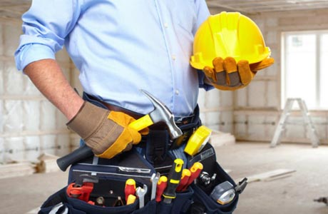

Отделочные работы
Мне приходилось часто видеть ремонты помещений выполненные мастерами разного уровня, а также встречаться и разговаривать с заказчиками, которые сделали ремонт в своей квартире или доме , а по итогу были частично или полностью разочарованны в выполненной работе. . Обжив свое обновленное гнездышко у них начали проявляться проблемы, приходить понимание насколько был не продуман дизайн интерьера , не удобен и не практичен , или технически неправильно выполнены отделочные работы , заканчивая конкретным бракоделием.
Оно то и понятно, не каждый из нас способен мыслить и рассуждать как профессионалы-строитель или дизайнер интерьера.
Причины разочарований после выполненного ремонта масса. Это как отсутствие профессионализма либо низкая квалификация мастеров-отделочников, не совсем обдуманная экономия самого заказчика , которая из экономии превращается в перерасход превышающий эту экономию в несколько раз, отсутствие полноценного контроля за проведения отделочных работ со стороны технического надзора подрядной организации, на всех ее этапах включительно до момента сдачи объекта заказчику , отсутствие или неполное взаимодействие самого заказчика в работе над проектом.
Перед началом отделочных работ , заказчик должен четко понимать, к какому результату он хочет прийти в конечном итоге. Проще говоря, какая картина должна предстать его взору, и сколько он готов вложить финансов в это мероприятие . Если в силу финансовых причин (за частую это основная причина) вы не можете сделать технический дизайн проект у специалистов данного ремесла, то вам необходимо самостоятельно составить проект хотя бы от руки на бумаге. Где будет указано назначение той или иной площади, какая и какого типа будет мебель, ее место расположение и желаемый цвет , вплоть до изготовителя и сроков изготовления. Какая будет бытовая техника , где она будет располагаться , каким способом устанавливаться. Это все необходимо , для того , чтобы должным образом подготовить места для будущей инстоляции мебели, будь то корпусная либо же встроенная мебель. Произвести правильный расчет нагрузки на электропроводку и подобрать электротехническое оборудование и кабельную продукцию соответствующую необходим техническим характеристикам. Произвести монтаж электроточек , интернет розеток , тв, телефонии четко в тех местах где этого требует техническое задание. Чтобы в последствии не наблюдать километры проводов идущие через всю квартиру от розеток к бытовой технике. Учесть виды , формы материалов для чистовой отделки помещений(напольное покрытие, плитка, декоративные элементы, краска и т.д). Формы, размеры и типы сантехники, ванны , унитаза. Для правильного и грамотного проектирования укладки плитки, подбора строительного материала и проведения отделочных работ направленных на подготовку и последующую установку того или иного оборудования. Важна каждая мелочь, цвет, размер, форм-фактор, и многое другое.
Штукатурка фасада
Особое внимание стоит уделить подбору подрядной организации или мастеров в частном порядке. Все люди разные, как и разные вкусы, пристрастия, взгляды. А потому выбрать исполнителя для выполнения ремонта только по рекомендации своих знакомых или друзей, довольно субъективный вариант. И не подумайте плохо на тех кто вам порекомендовал ту или иную бригаду, а вам выполнили так ремонт квартиры или дома, что вы решили, что это заговор. Нет, просто то что другим хорошо возможно вам покажется ужасом. Тогда стоит вопрос , а как же и кому доверить выполнение работ?!
И не подумайте плохо на тех кто вам порекомендовал ту или иную бригаду, а вам выполнили так ремонт квартиры или дома, что вы решили, что это заговор.
Выбор материалов
И скорее всего , это будет качество отделочных работ, либо качество самих материалов, последствия которых могут проявиться не на этапе черновой отделки , а уже на этапе чистовой или даже при монтаже мебели или еще позже, спустятя какое то время.
- Пункт 1
- Пункт 2
- Пункт 3
- Пункт 4
- Пункт 1
- Пункт 2
- Пункт 3
И на исправление ошибок этой некачественной работы , потребуется время , новый отделочный материал, деньги на оплату работы мастера который будет исправлять ошибки «недорогих» специалистов. Итог — экономии нет, а есть перерасход. Либо вам , придется смериться с тем, что не будет радовать глаз еще долгие годы.
| Материал | Цена, руб |
| Цемент | 500 |
| Грунтовка | 300 |
| Краска | 800 |
| Крепеж | 150 |
| Клей | 200 |